Ein modernisiertes Fire Emblem der GBA-Ära: Taktik auf einer Pixel-Karte mit moderner Lichtschicht, erzählt mit hellen Anime-Porträts.
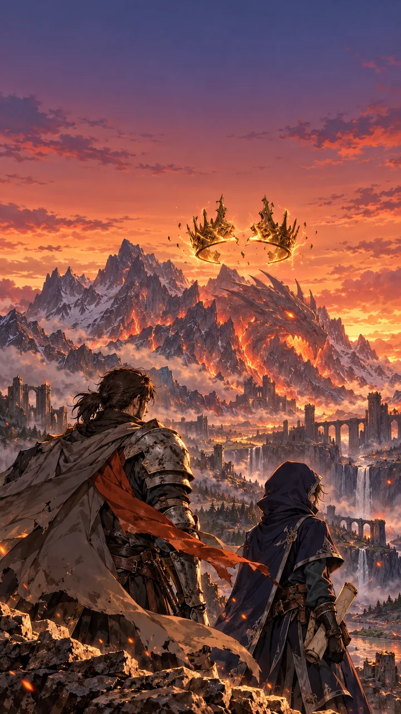
Kapitel 1, „Asche über Varnhold“: Abenddämmerung, das Stadtzentrum brennt. Gerendert aus dem Pipeline-Beweis, dreifach vergrößert.
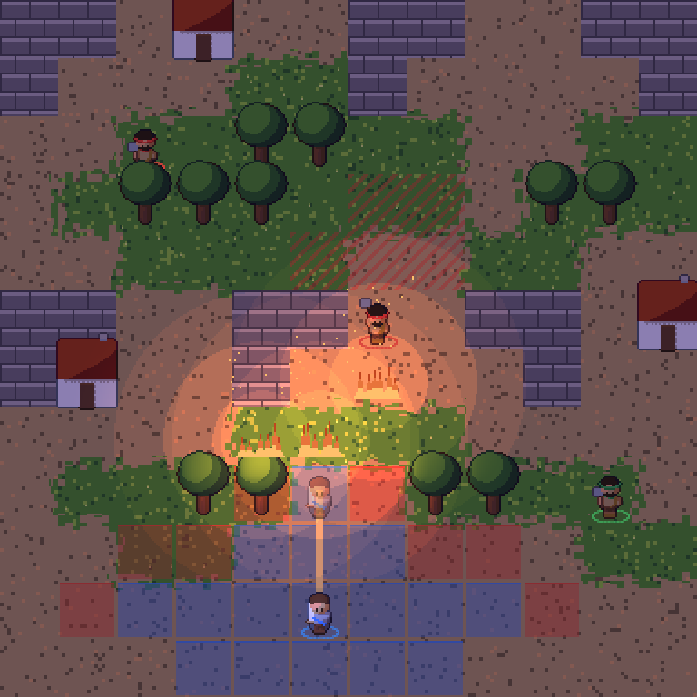
Ein komplettes Figuren-Sheet mit 37 Frames wiegt etwa 10 KB. Das Größenbudget gehört Porträts, Hintergründen und Audio.
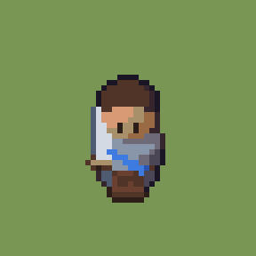
idle · 4f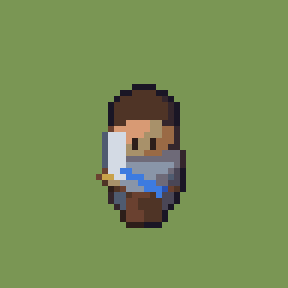
walk s · 4f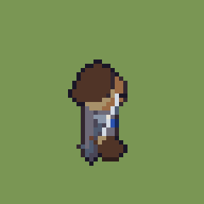
walk e · 4f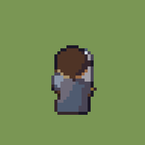
walk n · 4f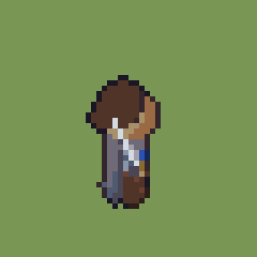
attack e · 6f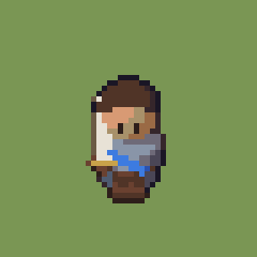
attack s · 6f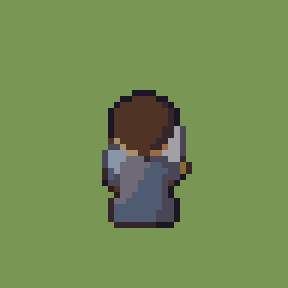
attack n · 6f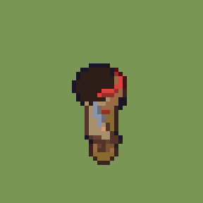
bandit axe · 6f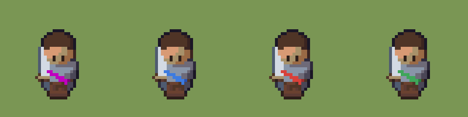
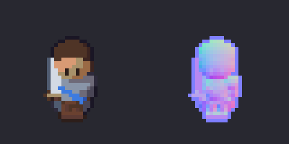
Erste Referenzblätter aus ChatGPT. Wiedererkennung läuft über Silhouette, Haarfarbe und ein Signaturdetail, das auch im 32-px-Chibi sichtbar bleibt.
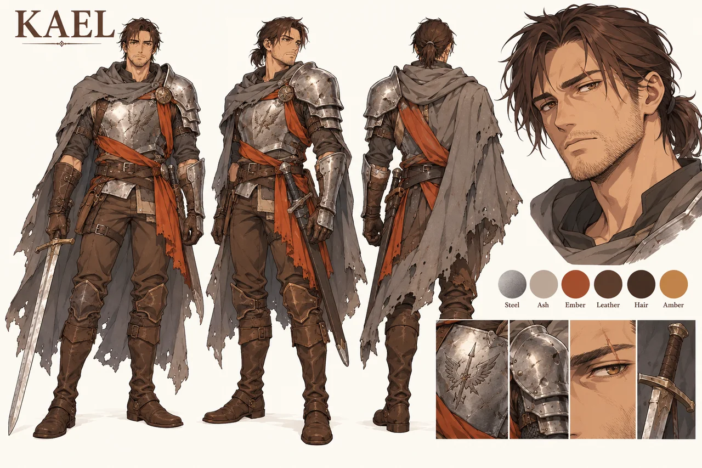
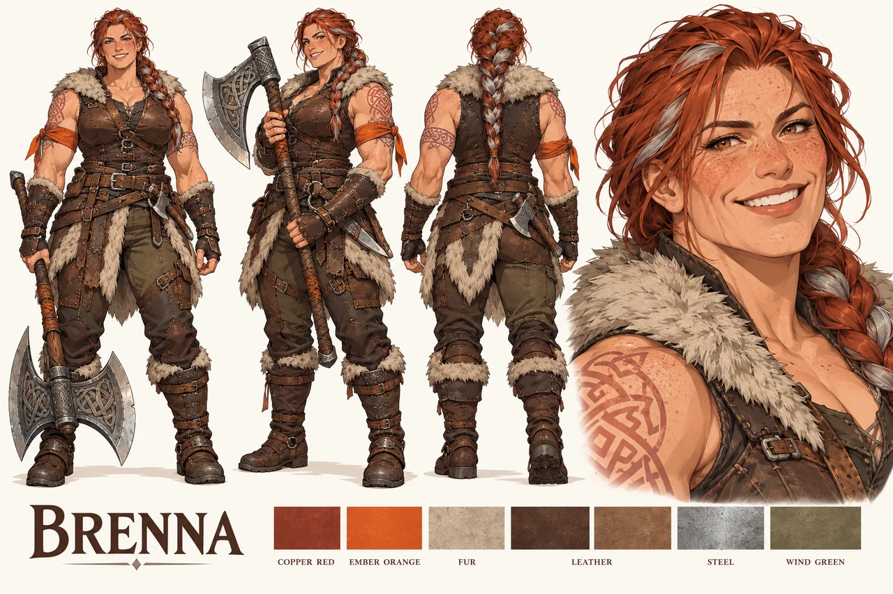
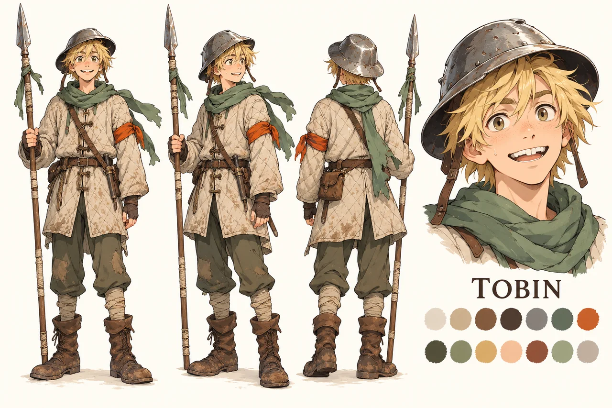
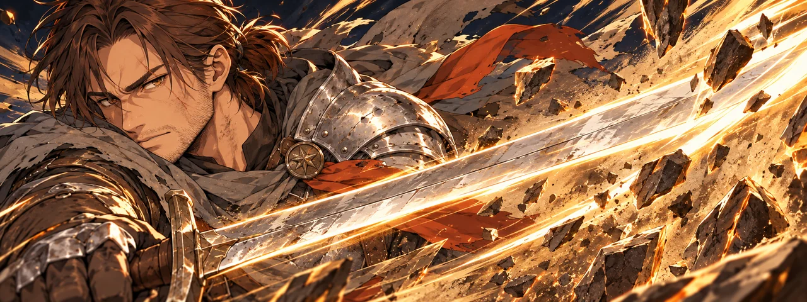
Gleiche Pose, nur Gesicht, Brauen und Schultern ändern sich. So springt das Bild beim Wechsel nicht. Hintergrund: Varnhold, weichgezeichnet und leicht entsättigt.
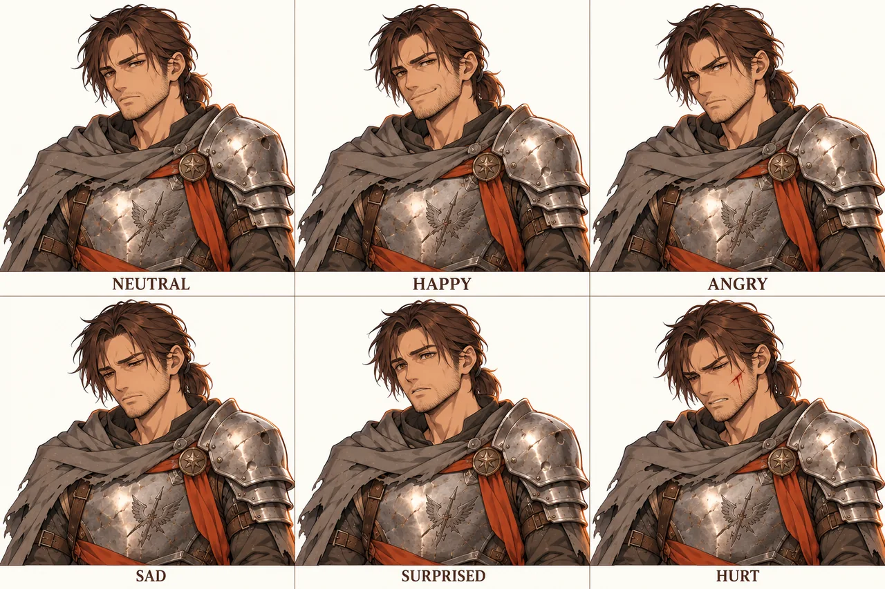
Cinzel für Titel, Nunito Sans für alles Lesbare, Silkscreen nur für Zahlen auf dem Brett. Goldrahmen mit 1 px, keine runden Ecken.
#F2603A#7BD389#B9874B#4AA8E8#F7D96B#8E5BD9Teamfarben dienen der Lesbarkeit und sind fest. Fraktionsfarben tragen Identität in Porträts, Bannern und Musik.
#3D7BE0#D9413A#3FA65A#8A8D9652 frei nutzbare Farben in Rampen mit Hue-Shifting, dazu drei Team-Rampen mit je 4 Stufen (letzte Zeile, rechts). Pro Figur höchstens 16 Farben plus Team-Rampe.
Die Jahreszeit trägt die Dramaturgie, vom goldenen Spätsommer bis in die Glut des Drachentempels.
ElevenLabs für alles. Teilvertonung in Deutsch und Englisch. Hörproben folgen, sobald der API-Zugang steht.
| Leitmotiv | Instrumentierung | Charakter |
|---|---|---|
| Aschenbanner | Fiddle, Laute, Rahmentrommel, später volles Orchester | warm, unverwüstlich |
| Silberne Lanze | Blechbläser, Fanfare, Snare | edel, stolz, etwas starr |
| Eisenmark | Kriegstrommeln, tiefe Streicher, Hörner | hart, marschierend |
| Orden der Glut | Chor, Orgel, Glocken | erhaben, unheimlich-schön |
| Drache / Pakt | tiefe Streicher, Kontrabass, Taiko, Frauenstimme | uralt, bedrohlich, traurig |
| Liora / Krone | Harfe, Solo-Flöte, Celesta | geheimnisvoll, zerbrechlich |